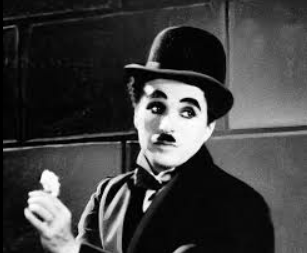

Про що цей сайт та в якій він тематиці?
Блог – це веб-сайт або розділ на сайті, де регулярно публікуються статті, звані постами або блог-записами. Блоги стали популярним засобом самовираження, обміну знаннями та ведення бізнесу.
Цей сайт розповідає про історію гумору, історічних творців, що були популярні в цій сфері.
